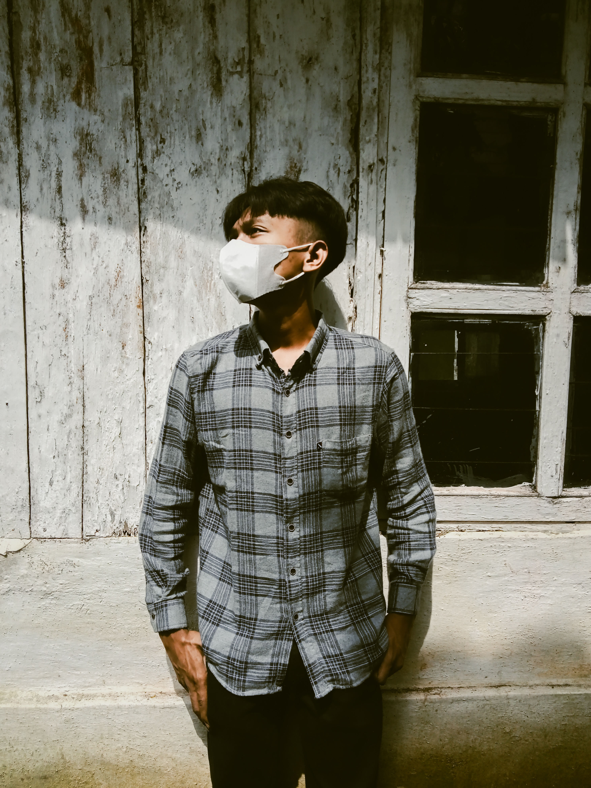

About Us
Rokok dan Kopi rasanya pahit untuk orang yang tidak mengerti cara menikmatinya
Tempat nongkrong dengan interior yang nyaman dan konsep outdoor garden di rooftop. Pemandangan city view dengan suasana asri bsa kamu dapatkan di sini. Pengelola cafe memang sengaja membuat tanaman dalam pot tumbuh subur, sehingga cocok buat kamu yang pengen menyegarkan mata dari pemandangan hijau.
Galeri
More Info
Owner
Maulana Wira Wisesa
Cara Pesan Melalui Website
Pilih buat pesanan
isi formulir pemesanan
Tunggu panggilan dari kasir
Bayar dan tunggu pesanan datang
Pemesanan
Pesan langsung bisa melalui kasir
Pesan secara online bisa melalui website kami
Menerima pesan antar melalui contact person yang sudah disediakan